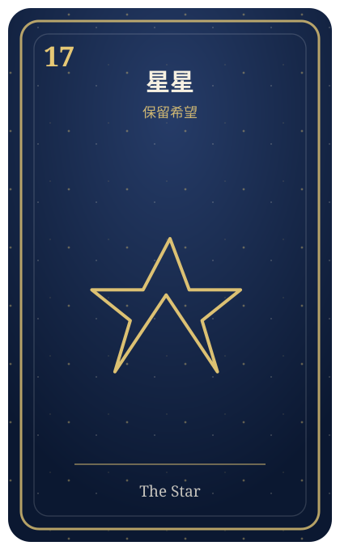

先觀察，再出手
今天不一定適合硬碰硬。先聽完對方的意思，你會更容易找到突破口。
今天先做這件事
重要訊息晚 30 分鐘再回。
避免在情緒上來時立刻做決定。
每天 30 秒，把今天的運勢變成一個可以執行的行動。
今天不一定適合硬碰硬。先聽完對方的意思，你會更容易找到突破口。
今天不一定適合硬碰硬。先聽完對方的意思，你會更容易找到突破口。
重要訊息晚 30 分鐘再回。
晚上回來時，幫今天留下一個感覺。明天的建議會更貼近你。

今天不需要一次解決全部。先挑一件最卡的小事，把它往前推一點點。
如果你正在猶豫，可以先問一個具體問題。